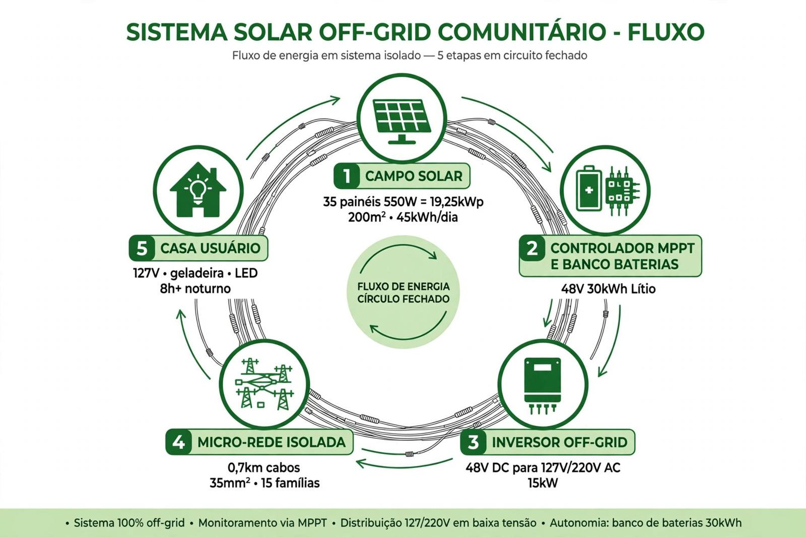
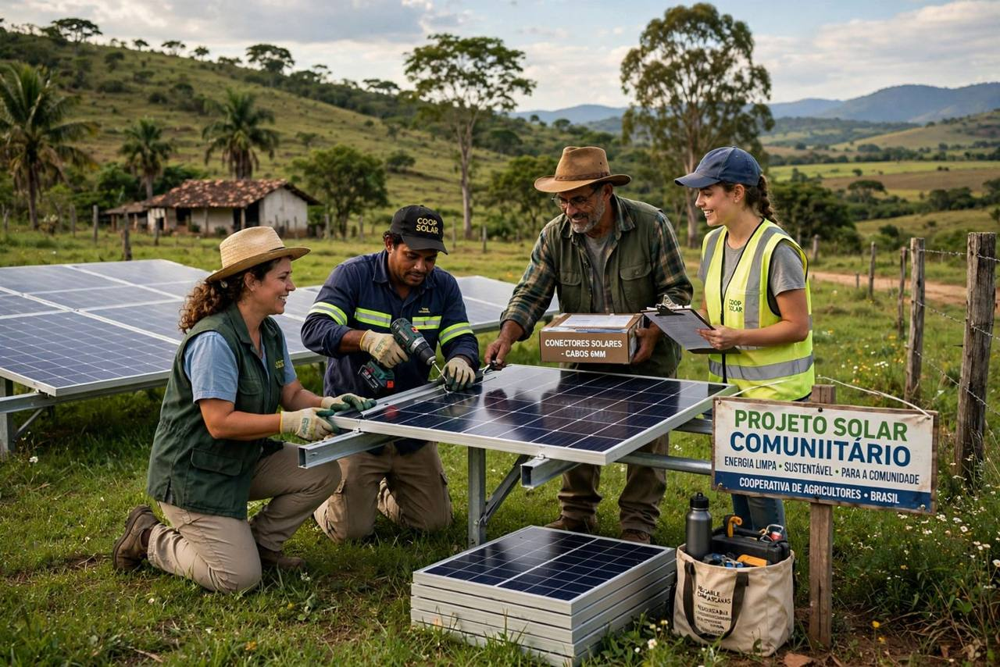
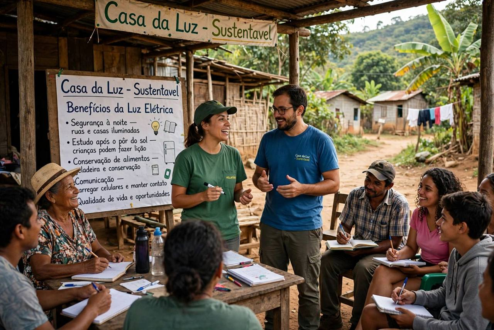
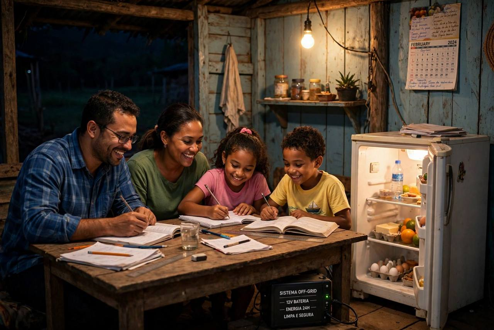

1. Projeto piloto
3 campos com 35 painéis em 200 m² cada, levando energia off-grid para onde a rede nunca chegou.
📍 Fase atual: em operação👥 15 famílias por campo
Início › Projetos
Do campo solar à sala de aula: conheça as frentes de trabalho da Luz Solidária.
Um projeto único, em 3 etapas: do piloto à escala nacional.
3 campos com 35 painéis em 200 m² cada, levando energia off-grid para onde a rede nunca chegou.
Fim do lampião: geladeira ligada, crianças estudando à noite e mais segurança. Custo zero para quem recebe.
O piloto é a prova. O objetivo é replicar o modelo em cada comunidade rural sem acesso à rede elétrica.


Instalação e manutenção das fazendas solares em terrenos ociosos, com micro-rede para 15 famílias por campo.

Encontros na comunidade para ensinar o uso seguro e econômico da energia, com material em letra ampliada e em áudio.

Iluminação LED nas casas para que crianças e adultos possam estudar à noite.

Prioridade de ligação para famílias com pessoas com deficiência e participação de voluntários PCD em todas as frentes.